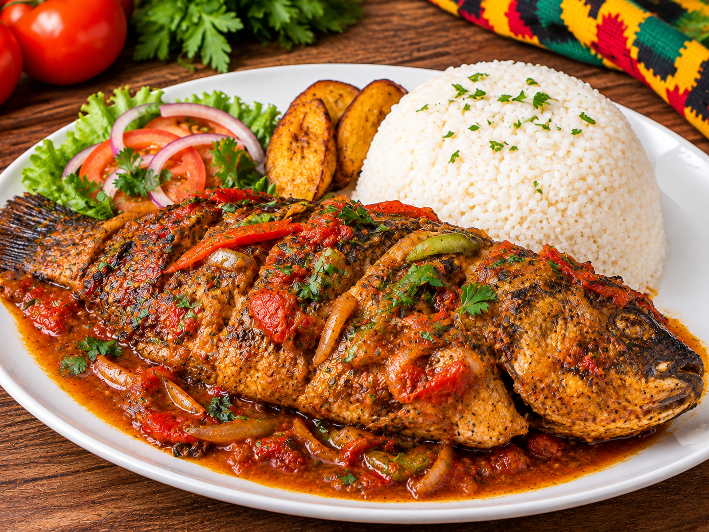

Poisson Braisé 🇹🇬
Le poisson braisé est un plat très apprécié au Togo. Préparé avec un poisson frais assaisonné puis grillé, il est savoureux, parfumé et convivial.

🛒 Ingrédients
- 1 poisson frais
- Oignon
- Ail
- Gingembre
- Poivre
- Piment selon le goût
- Sel
- Huile
- Citron
👩🏽🍳 Préparation
- Nettoyer soigneusement le poisson et faire quelques entailles sur les côtés.
- Préparer une marinade avec l'oignon, l'ail, le gingembre, le poivre, le sel, le citron et un peu d'huile.
- Badigeonner généreusement le poisson avec la marinade.
- Laisser reposer pendant un moment afin que le poisson absorbe bien les saveurs.
- Faire griller le poisson au barbecue ou au grill en le retournant régulièrement.
- Continuer la cuisson jusqu'à ce que le poisson soit bien doré et complètement cuit.
🍲 Accompagnement
Le poisson braisé peut être servi avec des légumes, des frites de banane plantain, du riz, de l'Akoumé ou une sauce pimentée.
💡 Petit conseil
Pour obtenir un poisson bien parfumé, laissez-le suffisamment mariner avant de le mettre sur le grill.